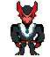
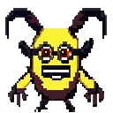
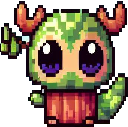

Visão Geral dos Personagens
Os personagens sao todos fofinhos, exceto o Devil
Devil

Descrição: Devil é o protagonista da história, o senhor das trevas que reina sobre o inferno. Ele é uma figura imponente, com uma aparência intimidadora, envolta em sombras e vestindo um manto negro que flui ao vento. Seus olhos brilham com uma luz sinistra, e sua presença irradia uma aura de poder sombrio.
Personalidade: Inicialmente frio e implacável, Devil é movido pela solidão e pelo vazio em seu coração. No entanto, à medida que a história avança, sua personalidade começa a se transformar, revelando uma vulnerabilidade surpreendente e uma capacidade de amar que ele próprio desconhecia.
Ploto

Descrição: Ploto é um lacaio infernal. Ele é um dos subordinados diretos do Devil. Ajuda na gestão do inferno e às vezes dá boas ideias para ele.
Personalidade: O Ploto não é maligno, mas tem a maldade como padrão. Dessa forma ele pode sugerir situações de pura maldade simplesmente por não ver nada de mal nisso, e não por querer de fato ver sofrimento. É meio bobo, não muito esperto, mas leal seguidor do Devil.
Luna
Descrição: Luna é uma das criaturas fofinhas que Devil encontra em sua jornada. Ela é uma criatura celestial, com asas brilhantes e um sorriso radiante que ilumina a escuridão ao seu redor. Sua aparência é delicada e graciosa, e ela emana uma aura de bondade e compaixão.
Personalidade: Luna é gentil e compassiva, sempre disposta a estender a mão para os outros e acreditar no poder do amor para superar a escuridão. Ela se torna uma aliada crucial na jornada de redenção de Devil, guiando-o pelo caminho da luz e mostrando-lhe que há esperança mesmo nos lugares mais sombrios.
Malachai, o Arauto do Caos
Descrição: Malachai é uma figura sinistra e enigmática que atravessa o caminho de Devil. Ele é um ser demoníaco, com chifres retorcidos, olhos flamejantes e uma risada maligna que ecoa nas profundezas do inferno. Sua presença é ameaçadora, e ele está determinado a impedir Devil de seguir seu caminho de redenção.
Personalidade: Malachai é astuto e manipulador, sempre buscando semear o caos e a destruição onde quer que vá. Ele representa as tentações e os desafios que Devil enfrenta em sua jornada, tentando convencê-lo a permanecer no caminho da escuridão e a rejeitar a luz que o chama.
Furz, o Guardião da Floresta

Descrição: Furz é uma criatura pequena e peluda, com orelhas pontudas e olhos brilhantes cheios de determinação. Ele é nativo das profundezas da floresta, onde protege os seres inocentes da ameaça de Devil. Sua aparência é adorável, mas sua coragem é incomparável.
Personalidade: Furz é corajoso e destemido, sempre disposto a enfrentar o perigo para proteger aqueles que ama. Ele se torna um líder entre as criaturas fofas que se unem para resistir à invasão de Devil, inspirando os outros com sua determinação e força de vontade.
Pompom, o Encantador das Nuvens
Descrição: Pompom é uma criatura fofa e esvoaçante, com asas de penas coloridas e um sorriso contagiante. Ele habita os céus, onde espalha alegria e bondade por onde passa. Sua aparência é tão fofa que é difícil imaginar que ele seja capaz de lutar, mas sua determinação surpreende a todos.
Personalidade: Pompom é otimista e amigável, sempre procurando o lado positivo das situações mais sombrias. Ele se torna um símbolo de esperança para as criaturas fofas que resistem a Devil, lembrando-as de que o amor e a amizade são as armas mais poderosas contra a escuridão.
Rufus, o Guardião das Profundezas
Descrição: Rufus é uma criatura robusta e peluda, com garras afiadas e um rosnado intimidante. Ele vive nas cavernas escuras e úmidas abaixo da superfície, onde protege os segredos antigos e os tesouros escondidos. Sua aparência pode assustar à primeira vista, mas seu coração é puro.
Personalidade: Rufus é leal e protetor, sempre colocando a segurança dos outros antes da sua própria. Ele se torna um aliado valioso na luta contra Devil, usando sua força e habilidade para ajudar as criaturas fofas a resistir à invasão das trevas.